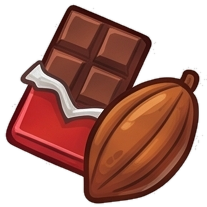
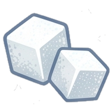
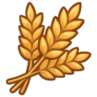
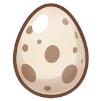
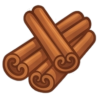
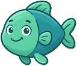
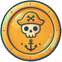
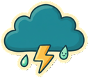
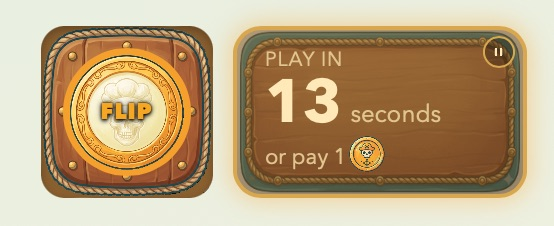
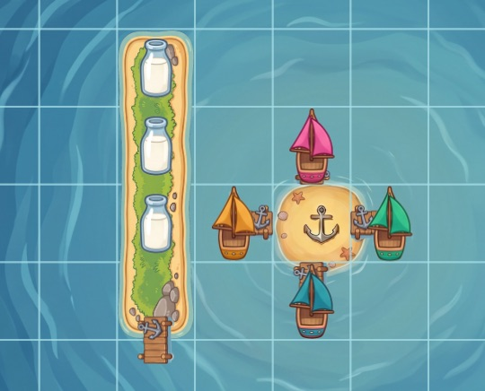

About Pastry Pirates
Pastry Pirates is a free browser pirate board game — sail
 a grid of islands, gather baking
ingredients
a grid of islands, gather baking
ingredients


 ,
trade and battle
rival captains, and race home to become
the Best Baker on the Sugar Seas
,
trade and battle
rival captains, and race home to become
the Best Baker on the Sugar Seas 
How it plays
The goal
Every captain starts with a secret recipe of five ingredients —




— drawn fresh each voyage. Collect them all, sail home to the Isle of Tortuga

Your turn
Each round the wind sets your
sailing budget for the turn — cheap with it, dear against it. Once you've sailed, you take one
action: dock  at an island and
flip a coin for a crate,
attack a nearby ship for a shot
at their cargo, trade with any
other captain, or fish
at an island and
flip a coin for a crate,
attack a nearby ship for a shot
at their cargo, trade with any
other captain, or fish

for a quick coin
. Storms
roll in occasionally and shove every ship a few squares, so keep an eye on the sky.
Coming home
Every island you raid fills
another slot in your hold. Once you've gathered every ingredient on your map, race back to the
Isle of Tortuga  . If more than one
captain makes it home the same round, it comes down to a head-to-head bake-off
. If more than one
captain makes it home the same round, it comes down to a head-to-head bake-off
 .
.

What the captains are saying
- "This game made me hungry"— Davy Scones
- "I'm going to actually bake my recipe in real life"— Crustbeard
- "YARRRRRGH I always be flippin' tails."— Flaky Jack
- "Have ye met me pet candycrab?"— Dough Hook
Credits
- Pastry Pirates was made by Wyatt Roy, a designer and overly enthusiastic noodle.
- It was inspired by two highschoolers, Luca and Amelia, who were taught by Nick Lesko how to design their own board game. Seeing their bridge-building game Seafarers is what started this one.
- Luis Zanforlin spent his entire last day in Boston imagining mechanics for it in his head.
- Robin and Cathy, two of its first multiplayer testers.
- Xavaar, who worked out how wind should affect movement based on real sailing, helped make battles genuinely strategic, and playtested with an obsession that matched the author's own.
- Juju, who has tolerated every conversation turning toward Pastry Pirates with the patience of a Buddhist monk.